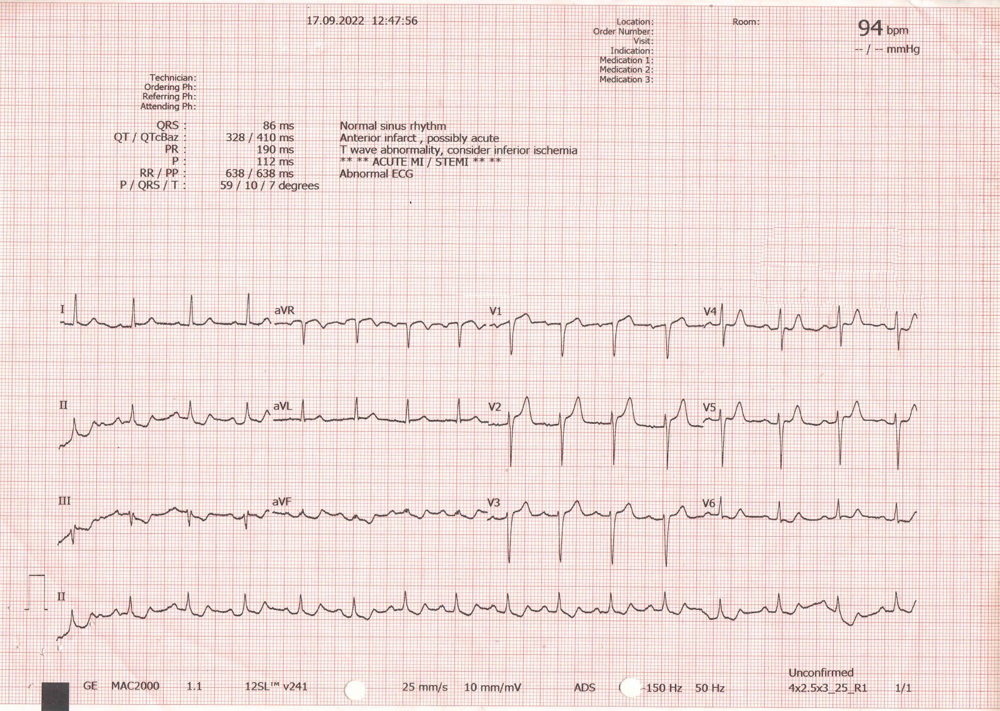
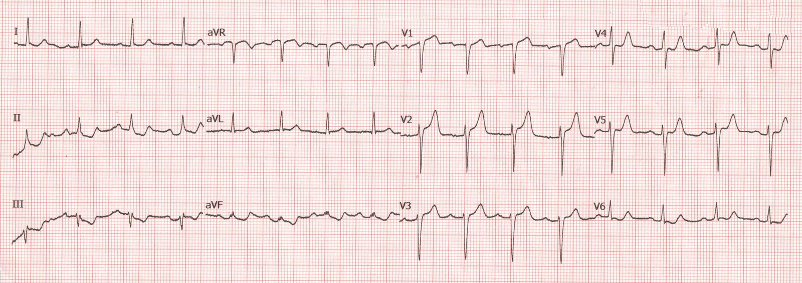
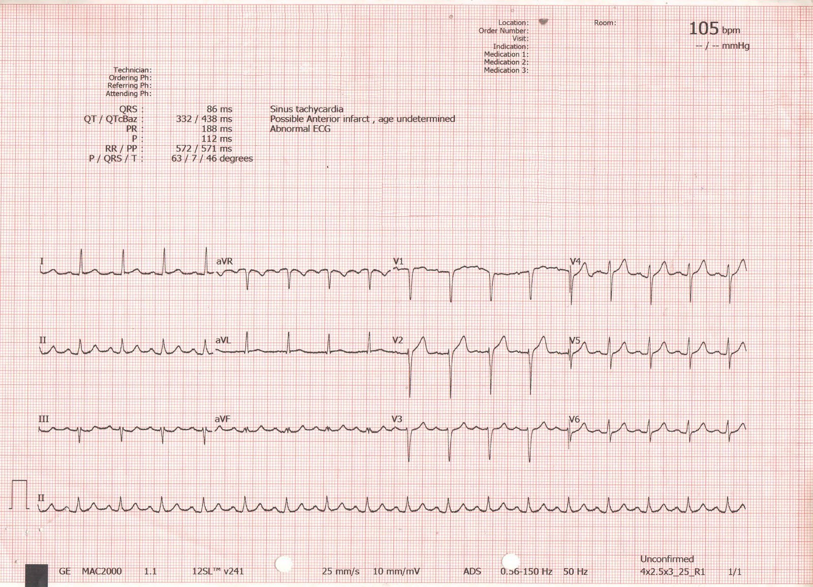
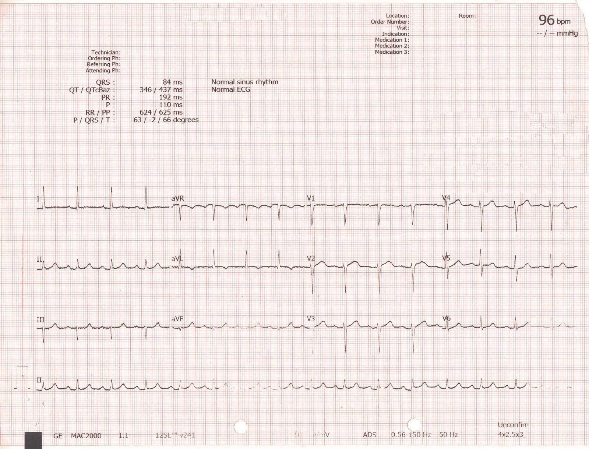
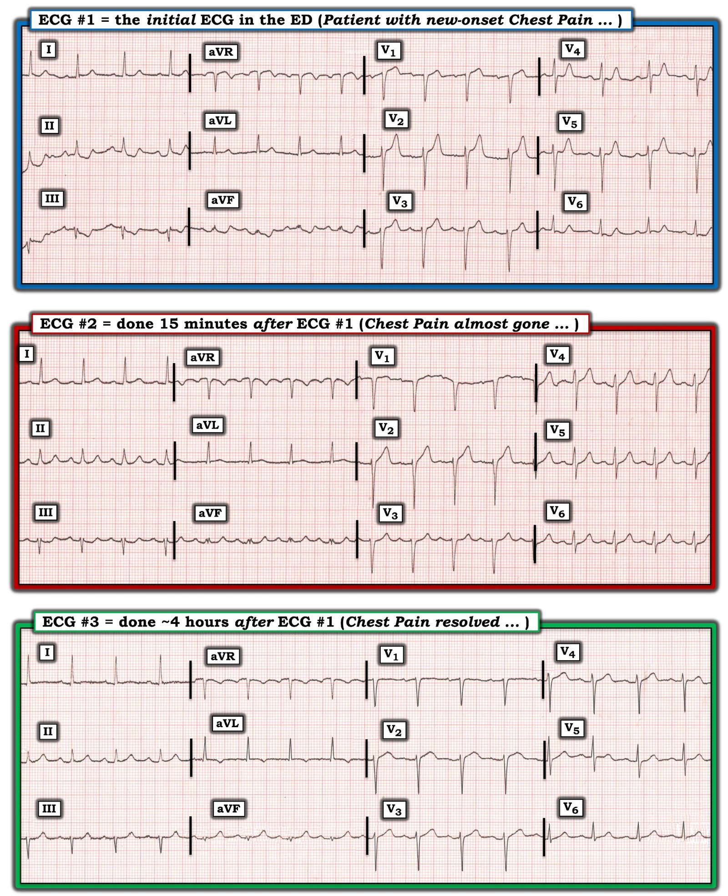

25/09/2022 — Bệnh nhân 50 tuổi đau ngực? Chuyện gì đang xảy ra? Bởi Emre Aslanger.
Bản dịch tiếng Việt của bài "A 50 year old with chest pain? What is going on? By Emre Aslanger." – Dr. Smith’s ECG Blog. Giữ nguyên toàn bộ 7 hình ảnh của bản gốc.
Đăng bởi Emre Aslanger, Biên tập viên mới nhất của blog chúng tôi. Emre là một bác sĩ tim mạch xuất sắc tại Thổ Nhĩ Kỳ, đã công bố nhiều nghiên cứu về điện tâm đồ trong OMI và các lĩnh vực khác.
Emre Aslanger Google Scholar Profile (Hồ sơ Google Scholar của Emre Aslanger)
Nam 50 tuổi, có tiền sử đái tháo đường 20 năm chỉ điều trị bằng metformin, đến viện vì đau ngực bắt đầu từ 20 phút trước. Cơn đau lan ra mặt trong cánh tay trái và lúc này sắp hết. Điện tâm đồ lúc nhập viện được trình bày dưới đây.
Bạn nghĩ gì?


Bạn có thể bấm vào hình để phóng to, nhưng hãy làm cho nó dễ nhìn hơn một chút ở đây:


Bạn nghĩ gì? (bạn vẫn có thể bấm vào hình để phóng to)
Mặc dù hiện tượng trôi đường nền khiến việc đọc hơi khó, ST chênh xuống ở các chuyển đạo dưới khá rõ ràng. Điều này cần thúc giục ngay người đọc tìm ST chênh lên tinh tế ở các chuyển đạo bên cao (chuyển đạo I và aVF [người dịch: nguyên văn ghi “aVF”, nhiều khả năng là lỗi đánh máy của aVL]) và các chuyển đạo trước. Dường như có ST chênh lên tinh tế ở aVL, dấu hiệu rất dễ bị bỏ sót nếu đọc riêng lẻ. ST chênh lên ở V1-3 cũng rất đáng ngờ. Hơn nữa, có ST chênh xuống ở V4-6. Tất cả đều chỉ ra nhồi máu cơ tim do tắc (OMI) động mạch liên thất trước (LAD) đoạn gần, mà đáng tiếc là không đạt tiêu chuẩn nhồi máu cơ tim ST chênh lên (STEMI).
Dù vậy, kết quả đọc tự động lại gợi ý STEMI cấp!
Nếu bạn dùng công thức phân biệt tắc LAD với ST chênh lên biến thể bình thường (điều không được khuyến nghị khi có ST chênh xuống, vì ST chênh xuống khiến biến thể bình thường gần như không thể xảy ra), bạn sẽ được 18.89, chỉ ra tắc LAD.
________
Bình luận của Smith: Điều này thật lạ vì tiêu chuẩn milimét của STEMI không được đáp ứng. Thuật toán quy ước này (không phải mạng nơ-ron) đã chẩn đoán STEMI bằng cách nào?
_______________
Bình luận của Smith và Meyers: Chúng tôi đã đăng một số ca trước đây có ST chênh lên ở V1 kèm ST chênh xuống ở V5, 6 do tắc LAD. Những ca này dường như chỉ ra nhồi máu vách, ở đoạn gần so với nhánh xuyên vách (xem các ca khác bên dưới). Chúng tôi đã đặt ra thuật ngữ hình ảnh “xoáy trước tim (Precordial Swirl)” dựa trên sự dịch chuyển lên trên của đoạn ST thường thấy ở V1-V2/V3 và dịch chuyển xuống dưới ở V4/V5-V6, như minh họa trong một ví dụ khác dưới đây. Xin lưu ý: hình ảnh giả quan trọng nhất của dấu hiệu xoáy trước tim gặp trong các ca LVH, vốn thường có ST chênh xuống ở các chuyển đạo bên và ST chênh lên ở V1-V2.
Đây là một ví dụ khác về “xoáy trước tim”:

_______________________
Bác sĩ phụ trách không chắc chắn và cho làm lại điện tâm đồ và theo dõi troponin.
Điện tâm đồ thứ hai được ghi sau 15 phút. Bệnh nhân nói cơn đau gần như đã hết.
Bạn nghĩ gì?


ST chênh lên tinh tế ở chuyển đạo I, aVL và V2 vẫn tiếp diễn. Đoạn ST ở các chuyển đạo dưới-bên đang trở về, nhưng vẫn còn ST chênh xuống đáng kể, đặc biệt ở chuyển đạo III (điều này luôn phải được coi là soi gương của ST chênh lên ở thành bên cao, dù ST chênh lên đó có thấy rõ hay không — nó KHÔNG phải “thiếu máu cục bộ (dưới nội tâm mạc) thành dưới”!! . Cũng lưu ý sóng Q rất nhỏ ở V2. Ngay cả điện tâm đồ này cũng rất đáng ngờ, nếu không muốn nói là chẩn đoán, OMI thành trước!
__________
Bình luận của Smith:
Từ khi bắt đầu viết blog này, tôi luôn nhấn mạnh rằng “ST chênh xuống không định khu”, nghĩa là ST chênh xuống ở các chuyển đạo dưới, trước hay bên KHÔNG cho bạn biết có thiếu máu cục bộ dưới nội tâm mạc ở vùng của các chuyển đạo đó. Điều này đã được chứng minh qua nhiều nghiên cứu về điện tâm đồ gắng sức. ST chênh xuống ở II, III, aVF nói chung là soi gương của ST chênh lên (thường không nhìn thấy) ở aVL.
ST depression limited to Inferior leads is reciprocal to high lateral wall and represents STEMI (ST chênh xuống chỉ ở các chuyển đạo dưới là soi gương của thành bên cao và thể hiện STEMI)
ST depression does not localize: 2 cases of “inferior” ST depression diagnostic of high lateral STEMI (references can be found here) (ST chênh xuống không định khu: 2 ca ST chênh xuống “thành dưới” cho phép chẩn đoán STEMI thành bên cao (tài liệu tham khảo có ở đây))
_______________
Troponin đầu tiên (hsTnT) là 9 pg/dL (bình thường <14 pg/dL). [Đơn vị này tương đương ng/L, đơn vị được dùng ở phần lớn Hoa Kỳ và châu Âu]. Vì lúc đó cơn đau đã hết hoàn toàn, họ quyết định chờ troponin lần hai.
__________
Bình luận của Smith: Nếu điện tâm đồ có giá trị chẩn đoán, như ở ca này, thì chờ troponin chỉ chấp nhận được khi CẢ điện tâm đồ và triệu chứng đều đã hết
__________
Troponin lần hai là 69 pg/dL. Chẩn đoán nhồi máu cơ tim không ST chênh lên (non-STEMI) được đưa ra và bắt đầu tìm một trung tâm có khả năng làm PCI.
Một điện tâm đồ khác được ghi vào giờ thứ 4.


Gần như mọi thay đổi đoạn ST đã trở về bình thường. Lưu ý tái tưới máu tự phát đã gây sóng T đảo ngược ở aVL và sóng T tương đối “đầy đặn” (bulky) ở các chuyển đạo dưới (“sóng T tái tưới máu soi gương”.)
Bệnh nhân được chuyển đến trung tâm có khả năng làm PCI. Troponin lần ba lúc ba giờ sau nhập viện là 320 pg/dL.
Chụp mạch vành cho thấy đúng như dự đoán: một chỗ hẹp có huyết khối ngay trước nhánh xuyên vách đầu tiên và nhánh chéo.
Tổn thương LAD được đặt stent thành công. Siêu âm tim ngày hôm sau cho thấy loạn động vùng trước và vách ở đoạn giữa và mỏm, với phân suất tống máu 40%.
Thông điệp cần nhớ:
- Điện tâm đồ thay đổi tinh tế không có nghĩa là tổn thương nhẹ, không quan trọng.
- Troponin tăng chậm và không phản ánh mức độ nghiêm trọng của tình trạng.
- Dù tổn thương này đã tái tưới máu tự phát, nguy cơ tắc lại khá cao và nếu xảy ra, một lượng đáng kể cơ tim sẽ bị mất trước khi tới được phòng thông tim. Những bệnh nhân này cần được đưa khẩn cấp vào phòng thông tim.
Nghiên cứu về điện tâm đồ trong OMI:
Nếu ca này nằm trong một nghiên cứu của chúng tôi, nó sẽ bị coi là điện tâm đồ dương tính giả!! Phương pháp của chúng tôi để xác định hồi cứu động mạch có bị tắc vào thời điểm ghi điện tâm đồ hay không đòi hỏi HOẶC 1) dòng chảy TIMI 0/1 hoặc đôi khi 0/1/2, HOẶC có tổn thương thủ phạm KÈM troponin rất cao, với troponin T độ nhạy cao là trên 1000 ng/L. Ở ca này, tái tưới máu nhanh đến mức đỉnh troponin chỉ là 320 ng/L, và ca này sẽ bị coi là dương tính giả trong một nghiên cứu của chúng tôi!!
Xem các ca khác có dấu hiệu xoáy trước tim:
A man in his 50s with “gas pain” (Một người đàn ông năm mươi mấy tuổi bị “đau do hơi”)
A man in his 60s with shockable arrest, then ROSC, and no STEMI – what will you do? (Một người đàn ông sáu mươi mấy tuổi ngừng tim với nhịp sốc được, sau đó ROSC, và không có STEMI – bạn sẽ làm gì?)
A 49 year old man with chest pain. Is it OMI? is it pseudonormalization? (Nam 49 tuổi đau ngực. Đó có phải OMI? Có phải giả bình thường hóa?)
35 yo woman with LAD occlusion manifesting with only hyperacute Ts and inferior ST depression, also missed by computer (Nữ 35 tuổi tắc LAD chỉ biểu hiện bằng sóng T tối cấp và ST chênh xuống ở chuyển đạo dưới, máy tính cũng bỏ sót)
Crushing Chest pain, but the ECG is not obvious; later there is both RBBB and LBBB (Đau ngực dữ dội như bị đè ép, nhưng điện tâm đồ không rõ ràng; sau đó có cả RBBB lẫn LBBB)
Very subtle anterior STEMI, TIMI II flow with thrombus (STEMI thành trước rất tinh tế, dòng chảy TIMI II kèm huyết khối)
What will you do for this patient transferred to you who is now asymptomatic? (Bạn sẽ làm gì với bệnh nhân được chuyển đến mà hiện đã hết triệu chứng này?)
How long would you like to wait for your Occlusion MI to show a STEMI? Sometimes serial ECGs minimizes the delay. (Bạn muốn chờ bao lâu để nhồi máu cơ tim do tắc của mình biểu hiện thành STEMI? Đôi khi các điện tâm đồ liên tiếp giúp giảm thiểu sự chậm trễ.)
A man in his sixties with chest pain at midnight with undetectable troponin (Một người đàn ông sáu mươi mấy tuổi đau ngực lúc nửa đêm với troponin không phát hiện được)
A 40 year old man with chest pain since last night (Nam 40 tuổi đau ngực từ đêm qua)
A man in his sixties with chest pain, tachypnea, and hypertension (Một người đàn ông sáu mươi mấy tuổi đau ngực, thở nhanh và tăng huyết áp)
What is the culprit vessel? (Đâu là mạch thủ phạm?)

==================================
Bình luận của KEN GRAUER, MD (25/9/2022):
==================================
Chúng tôi chào mừng BS. Emre Aslanger trở thành Phó Biên tập viên (Associate Editor) mới nhất của Dr. Smith’s ECG Blog! Vấn đề ông đề cập trong ca hôm nay liên quan đến một “chủ đề” quen thuộc với độc giả của chúng tôi: Nhận ra các dấu hiệu tinh tế của một OMI cấp không đạt “tiêu chuẩn STEMI” — nhưng dù vậy vẫn cần can thiệp kịp thời.
Để rõ ràng và dễ so sánh — tôi đã đặt lại 3 bản ghi liên tiếp của ca hôm nay trong Hình 1.
- Tôi thấy dễ nhận ra nhất các dấu hiệu trên các điện tâm đồ liên tiếp mà BS. Aslanger đã nêu bật — bằng cách so sánh từng chuyển đạo với từng chuyển đạo — kết hợp với đối chiếu chặt chẽ với bệnh sử lâm sàng.


SUY NGHĨ CỦA TÔI về các điện tâm đồ liên tiếp trong ca hôm nay:
Như rất thường gặp — Bệnh sử trong ca hôm nay là MẤU CHỐT: Bệnh nhân là nam 50 tuổi với yếu tố nguy cơ lâu năm là đái tháo đường. Ông đến khoa cấp cứu (ED) vì đau ngực mới khởi phát bắt đầu chỉ 20 phút trước điện tâm đồ #1.
- Không chỉ biểu hiện của bệnh nhân hôm nay ngay lập tức xếp ông vào nhóm “tỷ lệ mắc cao” đối với một biến cố mạch vành có khả năng xảy ra — mà việc ông đến khoa cấp cứu quá sớm (tức là trong vòng 20 phút!) sau khi khởi phát triệu chứng: i) Khiến rất có thể mọi dấu hiệu điện tâm đồ trên bản ghi đầu tiên sẽ tinh tế và chưa tiến triển đầy đủ; và, ii) Khiến bệnh nhân này là ứng viên tối ưu để có lợi ích tối đa từ can thiệp kịp thời NẾU hóa ra ông đang trong quá trình tiến triển một biến cố tim cấp.
Điện tâm đồ #1:
Nhịp trong điện tâm đồ #1 là loạn nhịp xoang ~90 lần/phút. Trục bình thường ở +15 độ. Các khoảng PR, QRS và QTc bình thường. Không lớn các buồng tim.
- Sóng Q — Có một sóng q rất nhỏ, hẹp ở chuyển đạo aVL.
- Tăng tiến sóng R — Vùng chuyển tiếp (tức là nơi sóng R trở nên cao hơn độ sâu của sóng S) — hơi chậm, xảy ra giữa chuyển đạo V5 và V6. Cần LƯU Ý (và có thể liên quan khi xét diễn biến lâm sàng của bệnh nhân này!) — là sóng R tăng từ chuyển đạo V1 đến V2 — nhưng rồi giảm từ V2 đến V3 — lại tăng ở chuyển đạo V4 — nhưng rồi khó giải thích là lại giảm thêm một lần nữa từ V4 đến V5. Tôi nghĩ sự tăng tiến sóng R tăng-rồi-giảm lặp đi lặp lại này gợi ý mạnh mẽ có một hoặc nhiều sai sót trong đặt điện cực chuyển đạo ngực.
Về Thay đổi ST-sóng T ở điện tâm đồ #1:
Tôi đếm được bất thường ST-T ở không dưới 11/12 chuyển đạo!
- Tôi cho rằng bất thường sóng ST-T “bắt mắt” nhất nằm ở chuyển đạo V2. Mặc dù ST chênh lên nhẹ thường gặp như một dấu hiệu bình thường ở các chuyển đạo trước V2 và V3 — mức chênh này thường không đạt tới 2 mm như ở chuyển đạo V2 của điện tâm đồ #1. Đáng chú ý hơn nữa là sóng T to lên không tương xứng ở chuyển đạo V2 (so với phức bộ QRS ở chuyển đạo này) — điều này, ở một bệnh nhân đau ngực mới khởi phát, gợi ý mạnh mẽ một thay đổi tối cấp.
- Các chuyển đạo V1 và V3 lân cận cũng có sóng T cao hơn mức lẽ ra phải có — mà tôi diễn giải là sự tiếp nối của thay đổi tối cấp thấy ở chuyển đạo V2.
- Chuyển đạo V4 và V5 có hình dạng bất thường: đoạn ST lúc đầu dốc xuống — rồi chuyển thành sóng T cao hơn và đầy đặn hơn mức lẽ ra phải có một cách không tương xứng.
- Hình dạng sóng ST-T ở chuyển đạo V4 và V5 trở nên dễ hiểu hơn với tôi khi tôi xét các chuyển đạo lân cận phía trước V1,V2,V3 (tất cả đều có sóng T tối cấp) — và chuyển đạo ngực bên V6 lân cận, vốn chủ yếu biểu hiện ST chênh xuống soi gương (tức là chuyển đạo V4 và V5, rõ ràng đang có biến đổi cấp — biểu hiện một hình ảnh trung gian giữa các chuyển đạo lân cận phía trước và phía bên của chúng).
- Theo Dr. Aslanger — hình ảnh tổng thể của điện tâm đồ #1 ở bệnh nhân đau ngực mới khởi phát này gợi ý mạnh mẽ OMI cấp do tắc LAD đoạn gần. Nhận định tắc LAD đoạn gần này còn được củng cố thêm bởi ST chênh lên kín đáo nhưng có thật ở chuyển đạo bên cao I và aVL — cùng với ST chênh xuống soi gương ở cả 3 chuyển đạo dưới.
- CÂU HỎI: Hình dạng các thay đổi ST-T cấp thấy ở cả 6 chuyển đạo ngực có thể đã khác đi thế nào — NẾU các điện cực chuyển đạo ngực được đặt đúng vị trí?
- ĐIỀU CỐT LÕI: Ngay cả trước khi kết quả troponin trả về dương tính — biểu hiện lâm sàng nguy cơ cao này ở bệnh nhân hôm nay, với đau ngực mới khởi phát + sóng ST-T bất thường ở 11/12 chuyển đạo, gồm nhiều chuyển đạo có sóng T tối cấp — rõ ràng đã đủ lý do để thông tim sớm ngay sau điện tâm đồ thứ 1 này.
Điện tâm đồ #2:
Cần nhấn mạnh rằng thật tối ưu khi điện tâm đồ ban đầu được ghi lại chỉ sau 15 phút! Nhu cầu ghi lại nhanh điện tâm đồ ban đầu trở nên đặc biệt quan trọng trong ca hôm nay khi tình trạng lâm sàng của bệnh nhân thay đổi! (tức là cơn đau ngực của bệnh nhân gần như đã hết trong vòng 15 phút sau khi ghi điện tâm đồ #1!).
- Diễn giải điện tâm đồ #2 tốt nhất là bằng cách so sánh trực tiếp từng chuyển đạo với chuyển đạo tương ứng (việc này dễ dàng hơn khi xem song song 2 điện tâm đồ đầu tiên của ca hôm nay, như trong Hình 1).
- Dù kín đáo — chắc chắn có ST chênh lên ít hơn ở chuyển đạo V2 của điện tâm đồ #2 — và ở chuyển đạo V3 không còn ST chênh lên chút nào nữa. Sóng T ở 2 chuyển đạo này rõ ràng trông bớt tối cấp hơn.
- Ở chuyển đạo V1 — Không chỉ ST chênh lên đã hết hoàn toàn trên điện tâm đồ #2 — mà thay vì đoạn khởi đầu ST thẳng như trên điện tâm đồ thứ 1, đoạn ST nay dẹt rõ rệt.
- Ở các chuyển đạo ngực bên (V4,V5,V6) — mặc dù kích thước sóng T không thay đổi đáng kể — không còn đoạn ST dẹt hay chênh xuống ở bất kỳ chuyển đạo nào trong số này.
- Ở các chuyển đạo dưới — ST chênh xuống soi gương thấy trước đó trên điện tâm đồ #1 nay đã gần như hết.
- Ở chuyển đạo aVL — sóng T đã nhỏ đi trên điện tâm đồ #2.
- Chuyển đạo duy nhất không có bất kỳ thay đổi ST-T nào là chuyển đạo I.
Tổng hợp lại tất cả:
Mặc dù chỉ 15 phút trôi qua giữa thời điểm ghi điện tâm đồ #1 và điện tâm đồ #2 — cơn đau ngực của bệnh nhân gần như đã hết trong khoảng thời gian này và đồng thời, hình dạng sóng ST-T đã cải thiện ở 10/11 chuyển đạo có bất thường trên điện tâm đồ #1. Đây là bằng chứng rõ ràng của thay đổi ST-T “động” (dynamic) ở một bệnh nhân đến khoa cấp cứu vì đau ngực mới xuất hiện chưa đầy 1 giờ trước đó.
- Theo Dr. Aslanger — cần mặc định là OMI cấp do tắc LAD đoạn gần cho đến khi chứng minh được điều ngược lại. Mặc dù việc hết đau ngực và các thay đổi ST-T cấp mất đi gợi ý tái tưới máu tự phát của mạch bị tắc — nguy cơ tắc lại vẫn còn cao.
- Troponin có thể không tăng đáng kể nếu thời gian mạch bị tắc rất ngắn (tức là khi có tái tưới máu tự phát nhanh). Quyết định thông tim không nên phải chờ đến khi troponin tăng.
- Về lâm sàng trong ca hôm nay — Điều kiện không thể tốt hơn để có thể đạt lợi ích tối ưu từ việc thông tim sớm kèm PCI mạch “thủ phạm” nhằm ngăn tắc lại.
Điện tâm đồ #3:
Xin nhấn mạnh — Thông tim sớm là có chỉ định trong ca hôm nay, nếu không phải ngay lập tức (sau điện tâm đồ #1) — thì là 15 phút sau đó, sau điện tâm đồ #2.
- Mặc dù điện tâm đồ #3 không cần thiết cho mục đích chẩn đoán — việc diễn giải bản ghi thứ 3 này củng cố thêm các kết luận rút ra từ việc xem xét 2 điện tâm đồ đầu tiên. Theo Dr. Aslanger — các thay đổi ST-T ở chuyển đạo ngực về cơ bản đã trở về bình thường trên điện tâm đồ #3 — với thay đổi tái tưới máu thấy rõ ở các chuyển đạo chi (tức là sóng T đảo ngược ở chuyển đạo aVL — và đoạn ST dẹt kèm sóng T vùng dưới “đầy đặn” (bulky)).